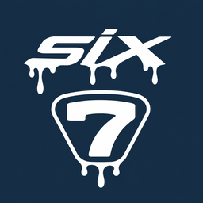
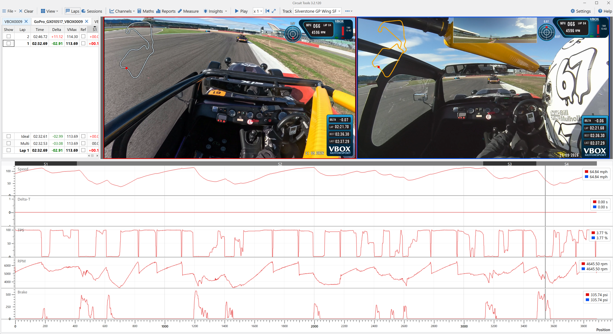

GoPro VBOX SyncFREE · OPEN SOURCE · WINDOWS · BETA
Automatically add your VBOX data to your GoPro videos.
Combine high-quality GoPro footage with synchronised VBOX gauges and track maps. View speed, RPM, throttle and brake pressure on your video, and analyse your runs in Circuit Tools.
Version 1.6.0b1 · Windows 10/11 x64 · No Python or account needed
More downloads and release notes
See the result in Circuit Tools

Left video · GoPro VBOX Sync outputGoPro footage with VBOX data and scene overlays.
Right video · Original VBOX recordingThe same run from the VBOX camera.
From download to your first run
- Install and open the app. Video tools download on request (110 MB).
- Choose Help → Try practice recordings to try the included demo.
- Put the GoPro MP4 files in the folder with your VBOX runs. Scan and tick the videos to include.
- Check rotation, then open Frame & preview…. Drag a crop to the framing you want, check the output and create the files. Only matching periods are exported, with aligned VBOX sound by default.
The illustrated quick-start guide works offline. All processing stays on your computer.
Source, documentation and support
MIT licensed. Independent project; not affiliated with GoPro or Racelogic.